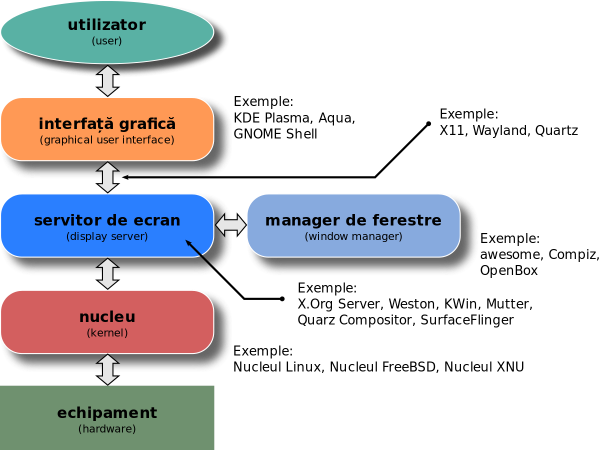

Utilizari ale arborilor in viate cotidiana
Arborii joacă un rol crucial în multe aplicații din viața cotidiană. Iată câteva utilizări comune ale arborilor în informatică și exemple de aplicații practice în viața de zi cu zi:
Sisteme de fișiere
Sistemele de fișiere pe majoritatea sistemelor de operare sunt organizate sub forma unui arbore. Directorul rădăcină este punctul de pornire, iar fiecare director sau fișier este un nod în arbore. Aceasta permite o structură ierarhică clară și eficientă pentru stocarea și accesarea datelor.
Baze de date
Baze de date relaționale: Arborii B (B-trees) și variațiile lor (B+ trees) sunt folosiți pentru indexare, ceea ce îmbunătățește semnificativ viteza de căutare și acces la date. Baze de date NoSQL: Multe baze de date NoSQL utilizează arbori pentru a gestiona structuri complexe de date.
Compilatoare si interpretoare
Arborii de sintaxă abstractă (AST) sunt folosiți pentru a reprezenta structura sintactică a codului sursă. Compilatoarele și interpretoarele parcurg acești arbori pentru a analiza și traduce codul în limbaj de mașină sau alte forme intermediare.
Sisteme de cautare si indexare
Motorii de căutare folosesc arbori pentru a indexa paginile web. Structuri de date precum arborii AVL, arborii roșu-negru și arborii de interval sunt folosiți pentru a menține datele sortate și pentru a permite căutări rapide.
Retele de calculatoare
Routare: Algoritmi precum Dijkstra și algoritmii pentru arborii de acoperire minimă sunt esențiali pentru determinarea celor mai scurte căi și pentru construirea rețelelor de routare eficiente. Arbori multicast: Utilizați pentru a transmite eficient informații către mai mulți destinatari în rețelele de calculatoare.
Interfate grafice pentru utilizator
Multe GUI folosesc arbori pentru a gestiona elementele vizuale. De exemplu, arborii de scene sunt utilizați pentru a organiza și a reda elementele grafice într-o interfață.

Inteligenta artificiala
Jocuri: Arborii de decizie și arborii minimax sunt folosiți pentru a decide mișcările într-un joc. Limbaj natural: Arborii sintactici sunt folosiți pentru a analiza structura gramaticală a propozițiilor.
Gestionarea pachetelor software
Sistemele de gestionare a pachetelor, precum npm pentru JavaScript sau pip pentru Python, utilizează arbori pentru a reprezenta dependențele între diverse pachete software.
Prin aceste exemple, putem observa că arborii sunt fundamentali în diverse aspecte ale informaticii și au aplicații directe în multe domenii care ne afectează viața de zi cu zi.
Top